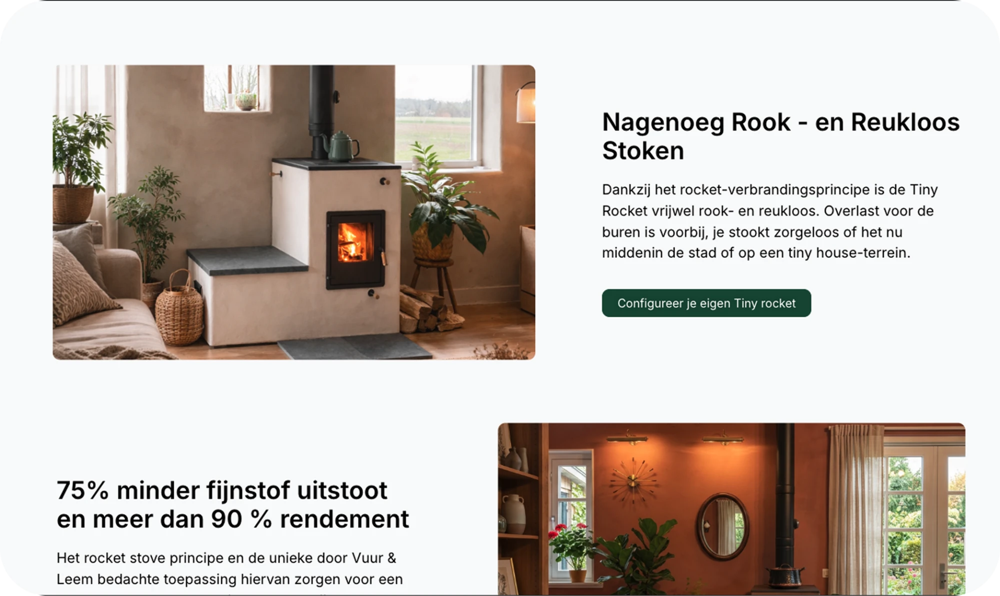

Tiny Rocket
Problem solvedA complete digital transformation for a Dutch manufacturer of sustainable rocket stoves.
01
The brief
A stove brand with no digital identity yet
Tiny Rocket builds near-smokeless, 90%-efficient rocket-mass stoves. No site, no account area, no mark — the brief covered all three.
Role
Brand identity + full-stack web design, solo
Scope
Logo, marketing site, customer accounts, stove configurator
02
Branding & logo
A mark that reads efficient, not rustic
Reference → mark


Real flame — the combustion the stove is built around, and the reason the icon had to glow, not sit flat.
03
Marketing site
Let the product photography do the selling
Real rooms, real light, minimal copy — the homepage leads with a lit stove in a plant-filled living room, not a product catalog.
04
Account area & configurator


Everything after the sale, in one place
Orders, install instructions, warranty — plus a stove configurator that carries floor type, bench side and finish straight through to checkout.
